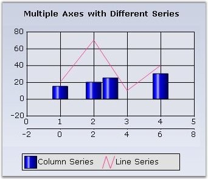
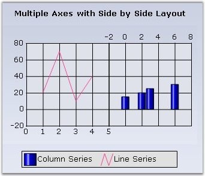
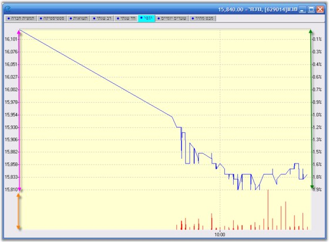

Often you will have to plot multiple series on a single chart, each in it's own x or y axis. You will then need to add an x or y axis to the chart in addition to the already existing PrimaryXAxis and PrimaryYAxis. You can do this by instantiating a ChartAxis and adding it to the Axes collection. Then specify the newly created axis as the x or y axis of a particular series.
The following are the steps to include a new axis to the chart.
|
[C#]
// Create a new instance of the chart axis. private ChartAxis secXAxis = new ChartAxis();
// Add the secondary axis to the chart axis collection. this.chartControl1.Axes.Add(this.secXAxis);
// Specify this axis to be the axis for an existing series this.chartControl1.Series[1].XAxis = this.secXAxis; |
|
[VB.NET]
' Create a new instance of the chart axis. Private secXAxis As ChartAxis = New ChartAxis()
' Add the secondary axis to the chart axis collection. Me.chartControl1.Axes.Add(Me.secXAxis)
' Specify this axis to be the axis for an existing series Me.chartControl1.Series(1).XAxis = Me.secXAxis |

Figure 250: ChartControl with a 2nd X-Axis (-2 to 8) stacked below the Primary X-Axis
Opposed Position
By default, this additional axis will be rendered right next to the corresponding primary axis as seen above. This might be undesirable and you would instead want it to be rendered at the opposite side of the primary axis. This is done by setting the OpposedPosition property to true. Read more on Opposed Axis here.
Figure 251: ChartControl with a 2nd X-Axis in Opposed Position
Stacked or SideBySide Position
By default, the secondary axes are rendered stacked over, or parallel, to the corresponding primary axis. And also sometimes rendered in a position opposite to the primary axis as shown in the above screenshots. This is because the XAxisLayoutMode and YAxisLayoutMode properties are set to Stacking by default.
However, you might want the secondary axis to be rendered in-line, side-by-side to the primary axis. You can do by setting the XAxisLayoutMode and YAxisLayoutMode properties to SideBySide.
Here is a code sample.
|
[C#]
this.ChartControl1.ChartArea.XAxesLayoutMode = ChartAxesLayoutMode.SideBySide; |
|
[VB.NET]
Me.ChartControl1.ChartArea.XAxesLayoutMode = ChartAxesLayoutMode.SideBySide; |

Figure 252: ChartControl with SideBySide Layout of Multiple Axes
ChartAxesLayouts
You can now combine the stacking and side-by-side chart axes layouts when multiple Axes are used, as shown in the below image. Using this feature, it is possible to position the three Y axis, as one on right side and the second one on the same side and third one on the opposite side.

Figure 253: Combining Stacking and SideBySide Layout
|
[C#]
//Created chart axes:
ChartAxis axis = this.chartControl1.PrimaryYAxis; ChartAxis axis0 = new ChartAxis(ChartOrientation.Vertical); ChartAxis axis1 = new ChartAxis(ChartOrientation.Vertical);
//Added chart axes into the chart:
chartControl1.Axes.Add(axis0); chartControl1.Axes.Add(axis1);
//Created chart axis layout using ChartAxisLayout class:(New class)
ChartAxisLayout layout1 = new ChartAxisLayout();
//Added the axes to this layout including the primary axis:
layout1.Axes.Add(axis); layout1.Axes.Add(axis0); layout1.Axes.Add(axis1);
//Added the layout into ChartArea.
chartControl1.ChartArea.YLayouts.Add(layout1); |
|
[VB.NET]
'Created chart axes:
Dim axis As ChartAxis = Me.chartControl1.PrimaryYAxis Dim axis0 As New ChartAxis(ChartOrientation.Vertical) Dim axis1 As New ChartAxis(ChartOrientation.Vertical)
'Added chart axes into the chart:
chartControl1.Axes.Add(axis0) chartControl1.Axes.Add(axis1)
'Created chart axis layout using ChartAxisLayout class:(New class)
Dim layout1 As New ChartAxisLayout()
'Added the axes to this layout including the primary axis:
layout1.Axes.Add(axis) layout1.Axes.Add(axis0) layout1.Axes.Add(axis1)
'Added the layout into ChartArea.
chartControl1.ChartArea.YLayouts.Add(layout1) |
 Note: All the axes with the same orientation must
be added to ChartAxisLayout (PrimaryAxis as well) as illustrated in the above
code snippet.
Note: All the axes with the same orientation must
be added to ChartAxisLayout (PrimaryAxis as well) as illustrated in the above
code snippet.